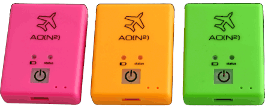

Äänikorkeusmittari
Visuaalisen korkeusmittarin lisäksi useimpien hyppääjien korvassa — tai korvissa — piippaa äänikorkeusmittari. Sen käyttö on erittäin suositeltavaa.
Äänikorkeusmittareiden tärkein tehtävä on piipata niissä korkeuksissa, joihin ne on asetettu piippaamaan. Yleensä piippareissa on kolme vapaapudotuskorkeutta, joissa se saadaan piippaamaan eri äänillä:
- Purkukorkeus (asetetaan yleensä n. 1500m korkeuteen)
- Avauskorkeus (asetetaan yleensä n. 1100m korkeuteen)
- Varavarjotoimenpidekorkeus (asetetaan yleensä n. 650m korkeuteen) - Kuolemankääkäksikin kutsuttu
Näiden lisäksi äänikorkeusmittareissa saattaa olla myös piipat kuvun varassa lentelyyn (swooppipiipat).
Yleisimmät äänikorkeusmittarit ovat L&B (Larsen&Brusgaard) valmistamia. Tässä kohtaa muuten pitää todeta erityismaininta ko. yrityksen asiakaspalvelusta. Se on nimittäin ihan huikeeta.
Heidän perusmallit ovat seuraavat:
- Solo
- Peruspiippa, kolme vapaapudotuspiippaa
- Optima
- Luxuspiippa, kolmen vapaapudotuspiipan lisäksi kolme swooppipiippaa
- Protrack
- Kolmen vapaapudotuspiipan lisäksi tallentaa hypyistä dataa.
Uusin tulokas äänikorkeusmittarimaailmaan on AO(N²) Brilliant Pebbles.

Hinta on erittäin kohtuullinen (alle 100€) ja siihen pystyy määrittämään (tehdään puhelinappiksella) 20 eri piippaa haluamaasi korkeuksiin. Lataus USBilla, akku kestää 2 kuukautta. Toimii vain piippana, ei käsittääkseni tallenna dataa hypyltä.